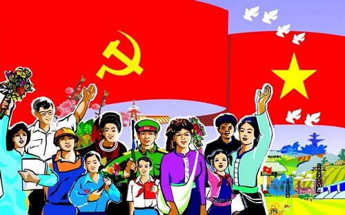
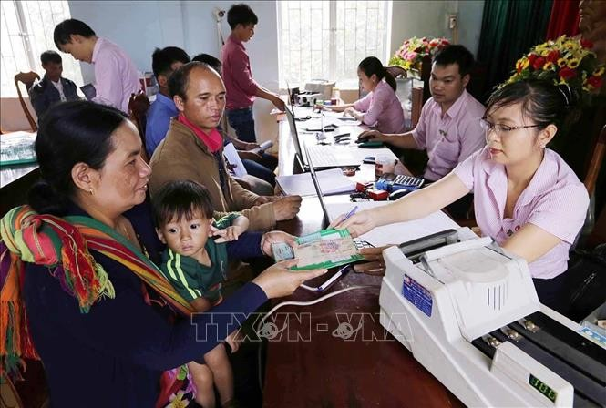

<!-- Contact Section -->
    <section class="content-section" id="Conclution">
  <div class="container">
    <header class="section-header">
      <h2 class="section-title">Kết luận</h2>
      <p class="section-subtitle">Tổng kết về hai nguyên tắc phân phối và con đường phát triển của xã hội.</p>
      <div class="tag-chips">
        <span class="chip">Quá độ</span>
        <span class="chip">CNXH</span>
        <span class="chip">CNCS</span>
      </div>
    </header>

    <div class="alternating-layout-container">
      <!-- Row 1 -->
      <div class="content-row reveal">
        <div class="text-col">
          <article class="feature-card">
            <div class="card-header">
              <span class="card-kicker">Kết luận chung</span>
              <h3 class="card-title">Hai nguyên tắc phân phối</h3>
            </div>
            <ul class="checklist">
              <li>“Làm theo năng lực, hưởng theo lao động” – nguyên tắc của giai đoạn quá độ.</li>
              <li>“Làm theo năng lực, hưởng theo nhu cầu” – mục tiêu của xã hội cộng sản.</li>
              <li>Mối quan hệ kế thừa – phát triển: từ “hưởng theo lao động” tới “hưởng theo nhu cầu”.</li>
            </ul>
          </article>
        </div>
        <div class="image-col">
          
        </div>
      </div>

      <!-- Row 2 -->
      <div class="content-row reveal">
        <div class="text-col">
          <article class="feature-card">
            <div class="card-header">
              <span class="card-kicker">Thực tiễn Việt Nam</span>
              <h3 class="card-title">Liên hệ và định hướng</h3>
            </div>
            <ul class="checklist">
              <li>Hiện nay kết hợp các hình thức phân phối: theo lao động; theo vốn – tài sản; theo phúc lợi xã hội.</li>
              <li>Mục tiêu: tiến bộ và công bằng, phát triển vì con người.</li>
            </ul>
            <div class="pill-row">
              <span class="pill">Việt Nam</span>
              <span class="pill">Phân phối</span>
              <span class="pill">Công bằng</span>
            </div>
          </article>
        </div>
        <div class="image-col">
          
        </div>
      </div>

      <!-- Row 3 -->
      <div class="content-row reveal">
        <div class="text-col">
          <article class="feature-card">
            <div class="card-header">
              <span class="card-kicker">Bước đi & Ý nghĩa</span>
              <h3 class="card-title">Con đường phát triển</h3>
            </div>
            <ul class="checklist">
              <li>Phát triển lực lượng sản xuất; công nghiệp hóa – hiện đại hóa.</li>
              <li>Xây dựng quan hệ sản xuất mới; hoàn thiện thể chế.</li>
              <li>Tăng cường an sinh xã hội.</li>
              <li>Phát triển con người toàn diện: giáo dục, y tế, văn hóa, đạo đức, trách nhiệm xã hội.</li>
              <li>Hoàn thiện thể chế kinh tế thị trường định hướng XHCN.</li>
            </ul>
            <p>Hai nguyên tắc liên kết theo tiến trình lịch sử. Hiện tại cần phát huy “hưởng theo lao động”, đồng thời chuẩn bị điều kiện vật chất – kỹ thuật, văn hóa – xã hội để tiến tới “hưởng theo nhu cầu”.</p>
          </article>
        </div>
        <div class="image-col">
          
        </div>
      </div>
    </div>
  </div>
</section>